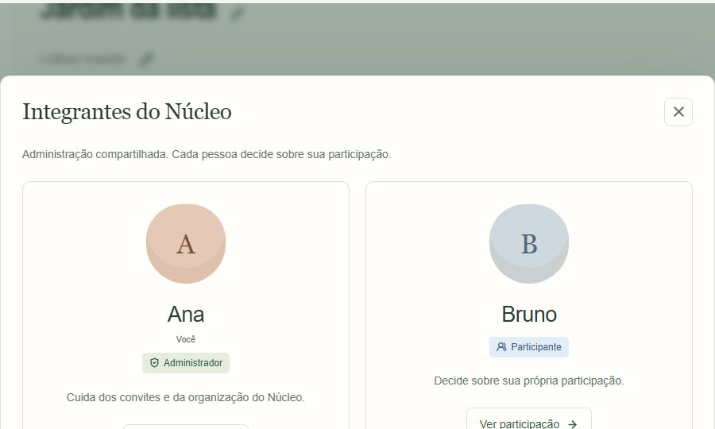
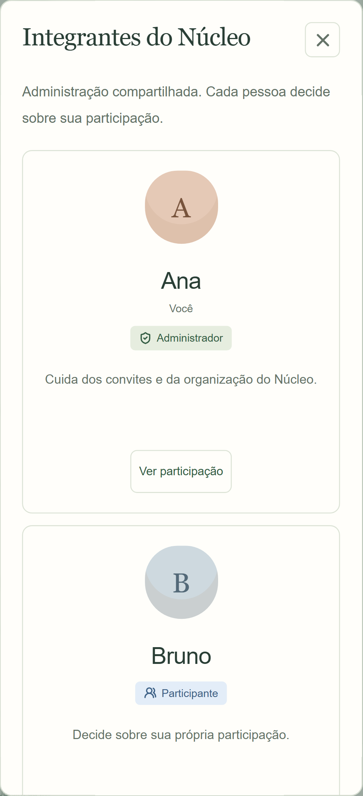
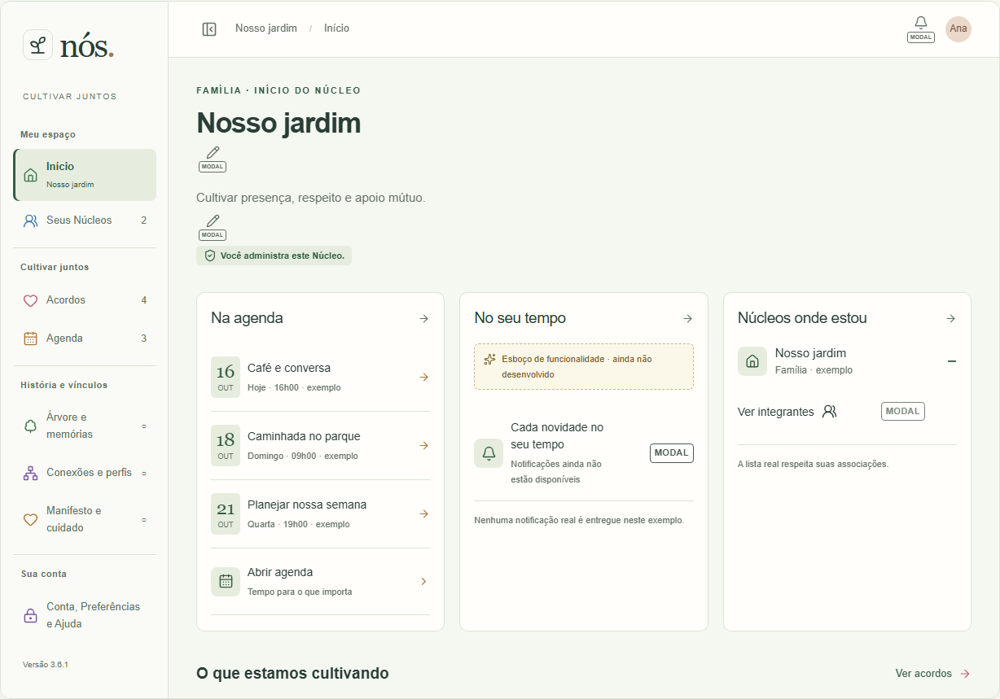
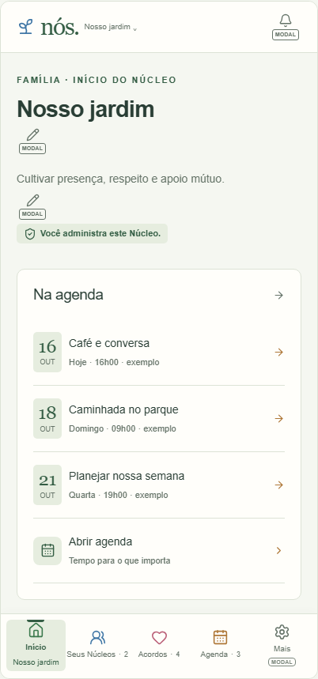
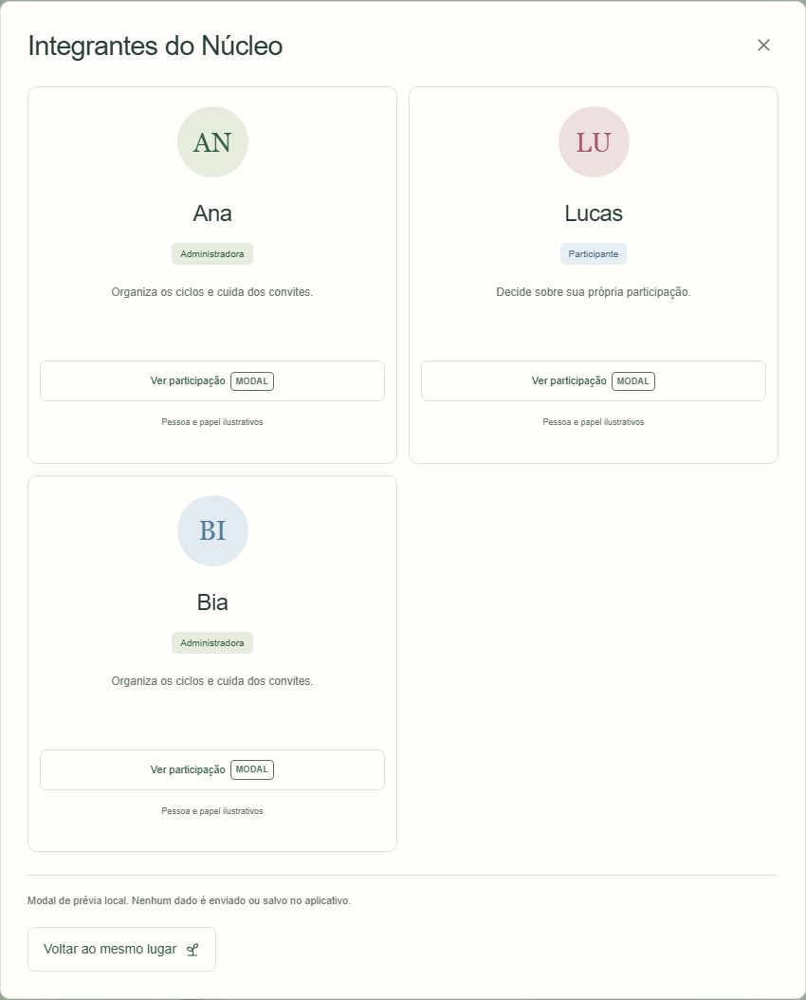
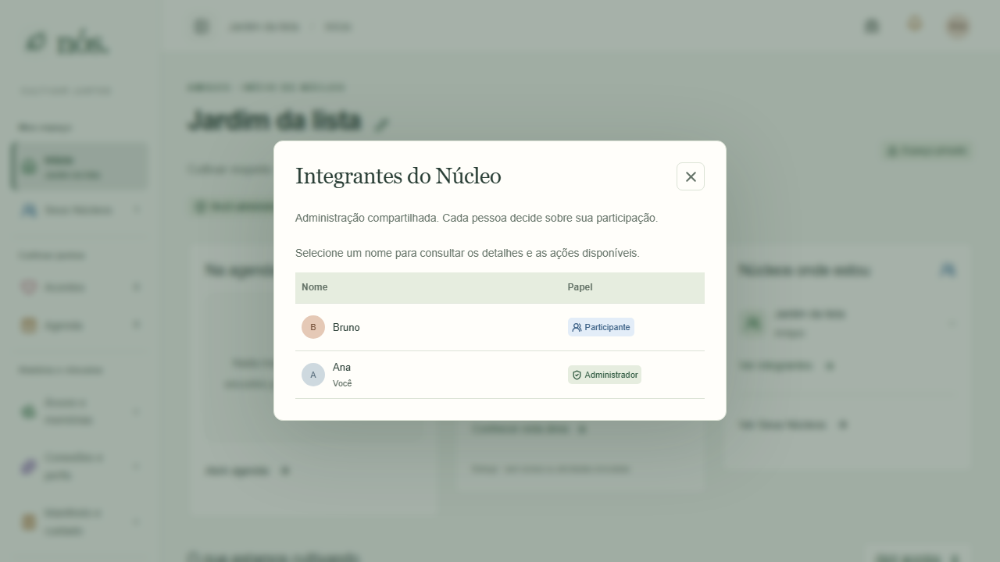
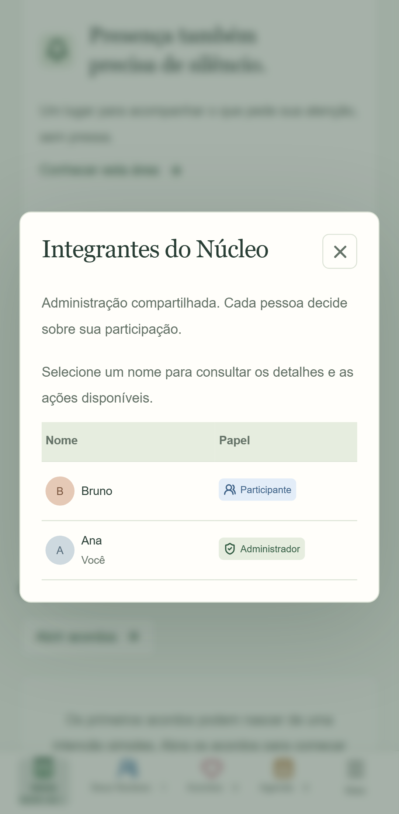
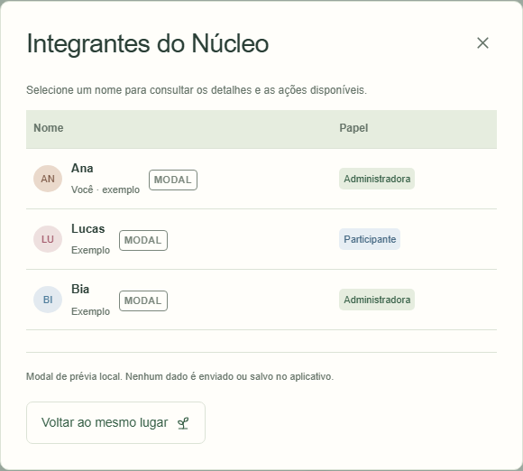
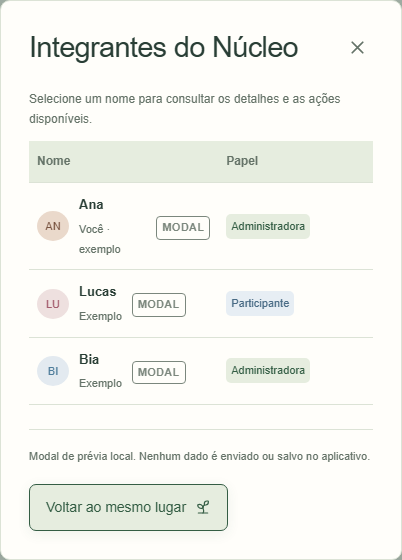

03/11/2026 · Telas13/73. Antes: cartões grandes e gatilho Ver participação. Depois: tabela compacta com cabeçalhos; nome abre detalhes; seta junto ao texto. Desktop e mobile. Aplicativo Chromium/Supabase local com pessoas descartáveis. Capturas anteriores por elemento podem reenquadrar a janela; depois usa viewport e botão X confirmado em viewport.
Layout conferido320/390/768/1280px, sem overflow e linhas abaixo120px; papéis/ações preservados. Atlas usa exemplos offline e moldura desktop/mobile. Sem certificação de aparelho físico ou implantação online. Unidade posterior à publicação3.6.1, mantida localmente.








